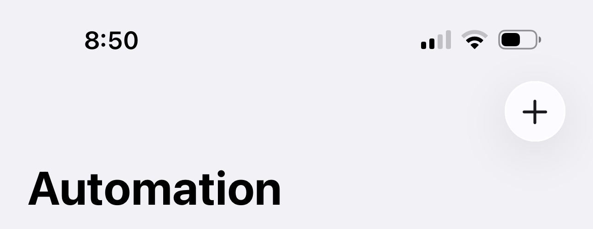
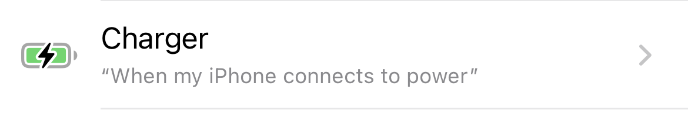
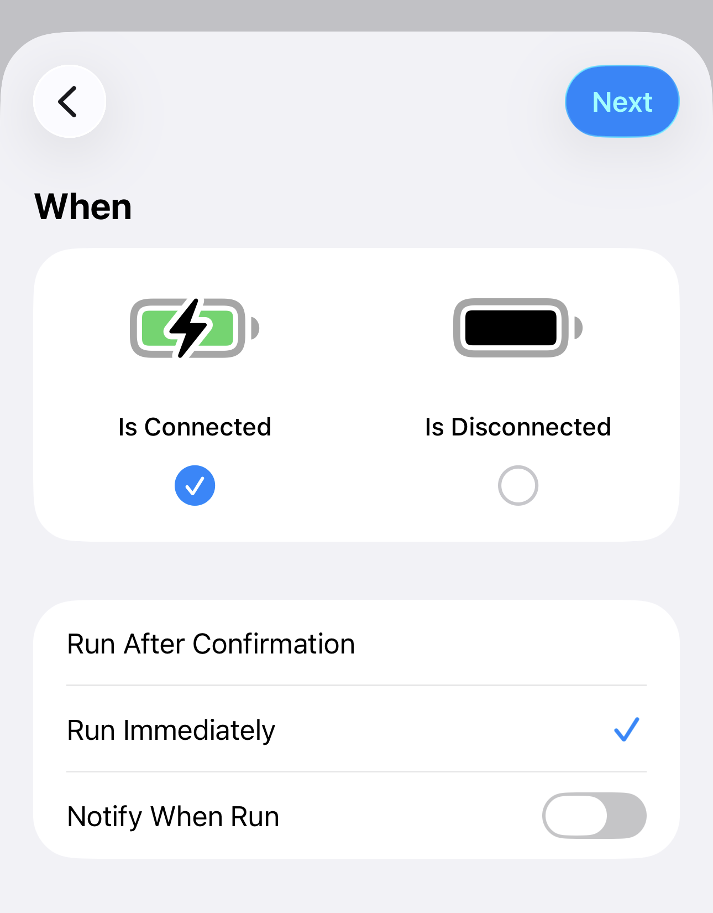
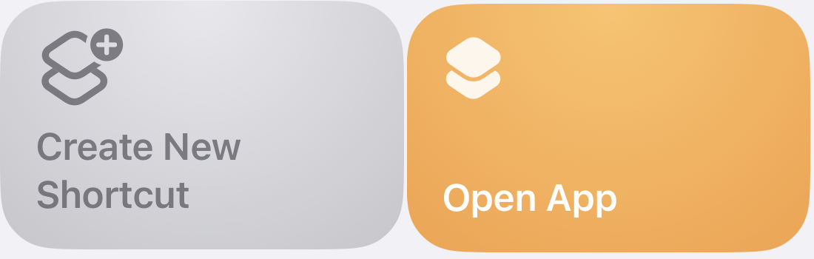
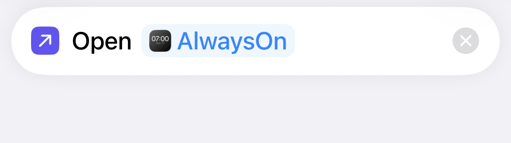

Apple Shortcuts
Launch AlwaysOn when charging.
Create a personal automation that opens AlwaysOn whenever your iPhone connects to power. It takes about a minute and works with wired or wireless charging.
Trigger
Charger · Is Connected
Action
Open App · AlwaysOn
Run
Immediately
How to set up
Three quick steps.
-
Open Shortcuts and choose Automation
Open the Shortcuts app, then tap Automation at the bottom. Tap + to create a new personal automation.

Open Automation, then tap the add button. -
Choose Charger and configure the trigger
From the list of triggers, choose Charger. Select Is Connected, set the automation to Run Immediately, then tap Next.

Choose Charger from the trigger list. 
Select Is Connected and Run Immediately. -
Create a shortcut and choose AlwaysOn
Tap Create New Shortcut, then choose Open App. Tap App, select AlwaysOn, then tap the checkmark.

Tap Create New Shortcut, then choose Open App. 
Select AlwaysOn, then save with the checkmark.
Finished setup
Your automation should look like this.
When
iPhone is connected to power
Do
Open App → AlwaysOn
Automation
Run Immediately
Troubleshooting
If it does not launch
- Confirm the automation is set to Run Immediately.
- Open the action and confirm AlwaysOn is the selected app.
- Disconnect power, wait a few seconds, then reconnect to test it.